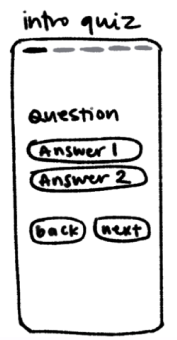
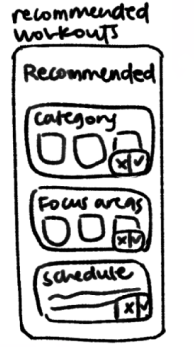
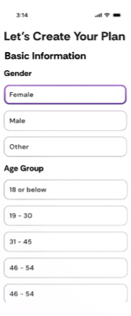
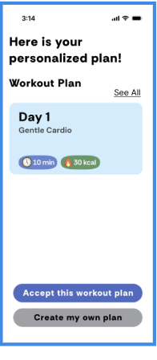
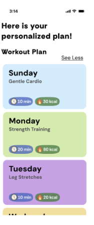
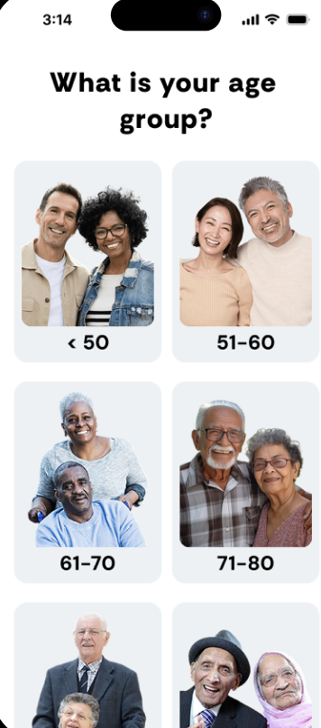
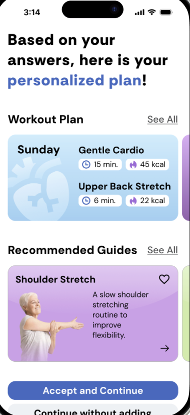

Low Fidelity


Early sketches mapped the onboarding quiz and personalized workout recommendation flow.
Design @ UCI
A scalable application concept designed to help elderly users discover safe workouts, schedule classes, and stay connected through community-centered product flows.
Problem
The challenge was to design a system that could support older adults through accessible workout discovery, guided exercise flows, class scheduling, and community touchpoints without overwhelming the user.
Opportunity
Older users needed more than a workout library. The product had to guide them toward safe routines, make scheduling feel predictable, and create a light sense of community so fitness felt easier to return to.
Ownership
I designed the core app structure, prototyped guided exercise and scheduling flows, and used testing feedback to refine how users moved between workouts, classes, and community features.
Design Strategy
The interface focused on clear hierarchy, larger touch targets, direct labels, and simple progress cues so users could understand what to do next without relying on memory or complex navigation.
Low Fidelity


Early sketches mapped the onboarding quiz and personalized workout recommendation flow.
Mid Fidelity



Mid-fidelity screens tested the plan builder, recommendation card, and expanded schedule view.
High Fidelity


High-fidelity screens brought the onboarding and personalized plan experience into a polished mobile interface.
01
Framed the experience around elderly users who need clearer navigation, reduced friction, and visible cues that make actions feel safe and predictable.
02
Developed information architecture and visual hierarchy for the core journeys: guided exercise, scheduling, and community modules.
03
Built and refined 3+ core features through prototyping and usability testing, focusing on engagement, clarity, and ease of use.
Outcome
The final direction connected accessibility, usability, and community into a scalable application system. The work emphasized intuitive flows, readable hierarchy, and features that made healthy routines feel easier to start and maintain.
Open Figma Deck